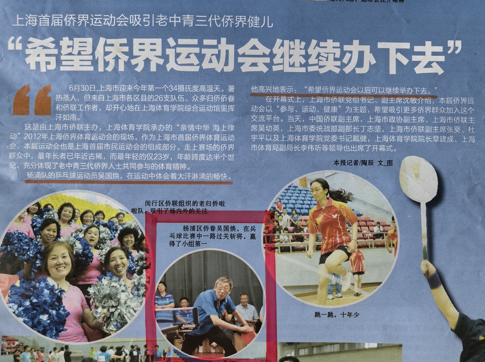

去年盛夏，我和妻子双双参加了市首届侨界运动会（市运会的组成部分）。
从接到区侨联的通知开始，我俩就沉浸在孩童般的兴奋和期盼中。
运动会当天，我俩早早地将新发下的运动装备穿戴整齐：宝兰的短袖体恤、黑色白边的运动裤、雪白的运动鞋。在镜子前照了又照，夫人打趣道：结婚30多年，这是我俩的第一套“情侣装”啊！ 我的心中也涌起一股暖流，就像儿时过年，穿上新衣要去走亲访友一样高兴啊。
那天，恰逢上海今年第一个高温天，暑热蒸人。但是参加乒乓比赛的侨界老中青各路好手，热情比气温更高。十几张球台一字排开，台上，长拉短吊、推搓扣杀；台下，欢声笑语、加油呐喊。
轮到我上场了。一阵阵紧张、兴奋、跃跃欲试、想赢怕输的感觉不断涌来。
我暗暗笑话自己“老夫聊发少年狂”，还那么在乎输赢啊？
又不得不称奇:半个世纪过去了，我参赛的心情还与当年孩童时一样啊。
我似乎又回到了小学时代，正代表学校外出参加比赛呢。唔，是市运会，让我又找回了快乐的童年。
也许是《侨报》记者看我打球十分投入，居然采访了我。用我的一句话“希望侨届运动会继续办下去”作为标题写了报道，还配上了我扣球的特写照片，刊登在几天后的《侨报》上。这就像小时候受到了老师的夸奖，也令我兴奋不已！
市运会让我体验了一把孩童般的快乐！
（本文入选2026年8月上海市侨联《申江情 侨联缘》主题征文）

我在比赛中扣杀